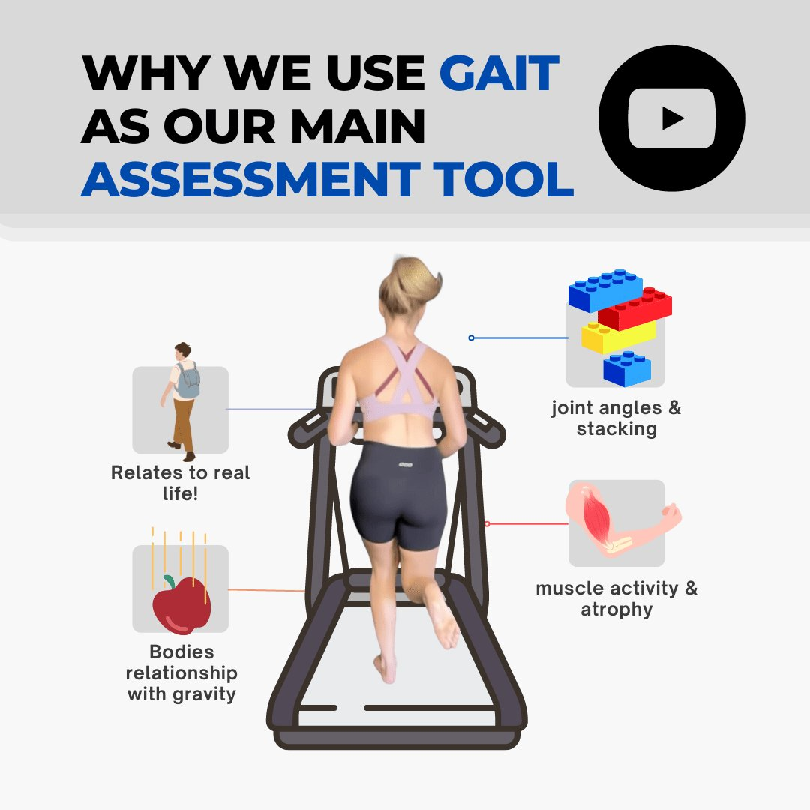

Spinal pain and postural issues affect millions of people. When seeking help, many turn to physiotherapy spinal treatments (physio spine), while others explore Functional Patterns. Although both aim to improve spine health, their methodologies differ significantly.
Physiotherapy focuses on symptom management and localised treatment. Functional Patterns takes a systemic approach, integrating movement patterns to correct the root causes of dysfunction.
Assessment Approaches: Physiotherapy vs. Functional Patterns
Physiotherapy Spine Assessments
Physiotherapists typically evaluate spinal health by assessing posture in static positions and testing range of motion. They often use manual therapy techniques, such as mobilisations and soft tissue release to address spinal pain and stiffness. Assessments may also include:
-
Postural evaluations in sitting and standing positions
-
Palpation to identify tender areas in the cervical spine, thoracic spine, and lumbar spine
-
Strength and flexibility tests for surrounding muscles
-
Movement analysis, focusing on individual joints
Physiotherapy spinal treatment plans often include exercises targeting specific muscles, aiming to reduce pain and restore mobility. However, these interventions often isolate body parts rather than integrating full-body movement.

Functional Patterns Spine Assessments
Functional Patterns approaches spinal health differently. Instead of isolating the spine, FP practitioners analyse how the entire body moves in real-world activities. This includes movements such as walking, running, and standing. This holistic assessment includes:
-
A gait analysis to identify movement compensations affecting spinal alignment
-
Observing how the hips, knees, and upper body interact with the spine
-
Evaluating breathing patterns, as improper breathing contributes to spinal instability
-
Identifying dysfunctional movement patterns that lead to long-term postural problems
By focusing on integrated movement, FP provides a more comprehensive understanding of spinal pain and dysfunction. The method aims for long-term correction rather than temporary relief.

How Physiotherapy Views Spine Health and Posture
Physiotherapy often treats spinal conditions by focusing on localised pain relief and symptom management. Techniques may include:
-
Manual therapy to release tension and improve mobility
-
Strengthening exercises for core muscles to support the spine
-
Postural education to encourage better sitting and standing posture
-
Stretching to improve flexibility and reduce stiffness
While these treatments can provide short-term relief, they often fail to address why these issues develop in the first place. Many patients experience recurring pain due to underlying movement dysfunctions that remain unaddressed.
How Functional Patterns Views Spine Health and Posture
Functional Patterns takes a more dynamic and systemic view of spinal health. Instead of treating pain in isolation, FP focuses on how the spine interacts with the entire body during movement.
The spine is not just a structure that holds the body upright. It is a key component in allowing for efficient movement. FP addresses spine health through:
-
Training fundamental human movements such as walking, running, and throwing
-
Strengthening the body as an integrated system rather than isolating muscles
-
Correcting postural misalignments through movement-based solutions
-
Teaching proper breathing mechanics to support spinal stability
By improving movement efficiency, FP reduces the functional limitations that contribute to spinal pain. This approach leads to sustainable improvements in posture and spinal health, rather than temporary relief.
The Importance of Movement in Spine Health
Poor movement patterns are a major contributor to spinal pain. Many people develop dysfunctions due to sedentary lifestyles, improper exercise habits, or repetitive movement patterns that strain the spine. Physiotherapy often addresses these issues reactively, while Functional Patterns aims to proactively correct them before they lead to chronic problems.
Physiotherapy exercises typically involve:
-
Static core exercises (e.g., planks) to support spinal stability
-
Isolated stretching and strengthening of tight or weak muscles
Manual therapy for pain relief (such as back or neck pain)
Functional Patterns, on the other hand, integrates movement into rehabilitation. Instead of isolating muscles, FP focuses on training movement patterns that align with human biomechanics. This approach leads to more effective and lasting posture correction.
Which Approach is Better for Long-Term Spine Health?
Both physiotherapy and Functional Patterns offer benefits. However, for those looking for long-term solutions, Functional Patterns provides a more sustainable approach. The key differences include:
-
Treatment Philosophy: Physiotherapy focuses on symptoms; FP addresses root causes.
-
Assessment: Physiotherapy isolates joints; FP analyses full-body movement.
-
Training Focus: Physiotherapy emphasises localised strengthening; FP trains integrated movement patterns.
-
Outcomes: Physiotherapy often requires ongoing treatment; FP aims for long-term correction.
Physiotherapy spinal treatments can help with acute injuries. However, they often fall short when trying to prevent long-term, recurring pain. Functional Patterns re-trains the body to move correctly. This reduces strain on the spine and improving overall posture in the long run.
Conclusion
When it comes to spine health, choosing the right approach can make a significant difference. While spine physiotherapy provides valuable tools for pain relief, Functional Patterns offers a more comprehensive and lasting solution by focusing on integrated movement. By assessing gait, addressing posture holistically, and correcting dysfunctional movement patterns, FP ensures that spinal pain doesn’t just get managed—it gets fixed.
If you want to improve your spine health for the long term, consider Functional Patterns Brisbane. Train smarter, move better, and eliminate spinal pain by addressing the root cause of dysfunction.
Free 2-Page Guide
The 5 Things Physios Miss — and The 5 Things You Actually Need to Fix Pain
Tried everything, but your pain keeps coming back?
This free guide reveals why most physio and rehab methods fail to create lasting results — and what’s really behind recurring pain. You’ll learn what traditional approaches often overlook, and the key movement principles that actually rebuild function, improve posture, and help you move pain-free long term.